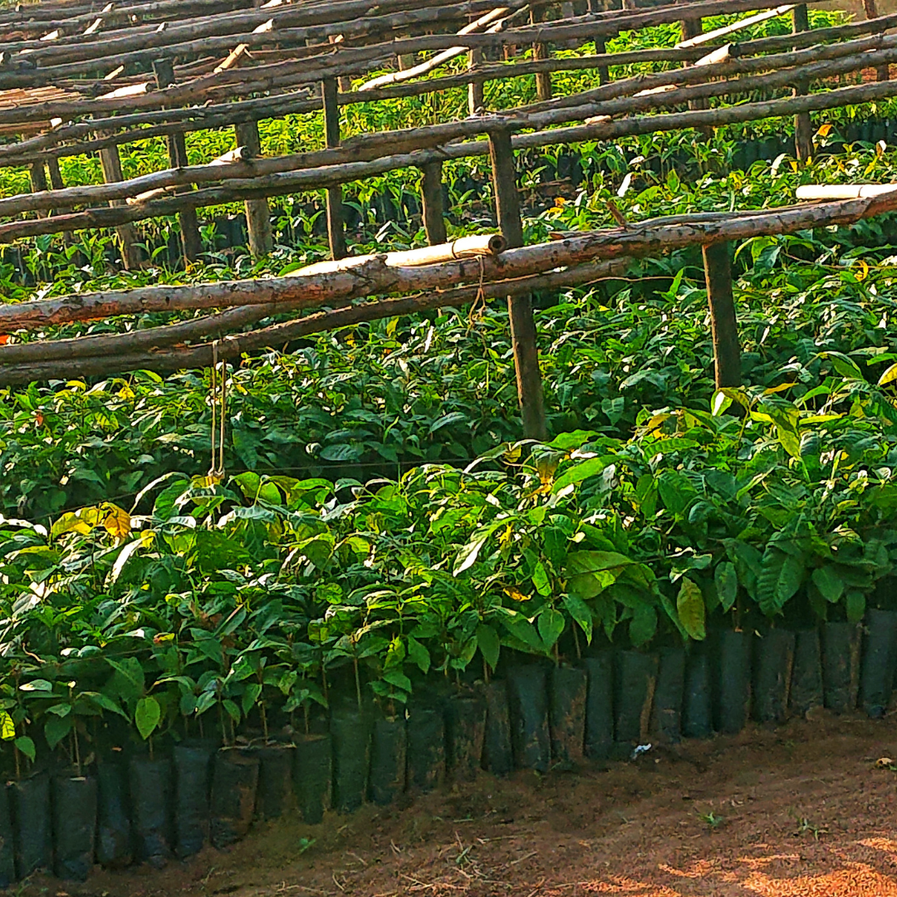
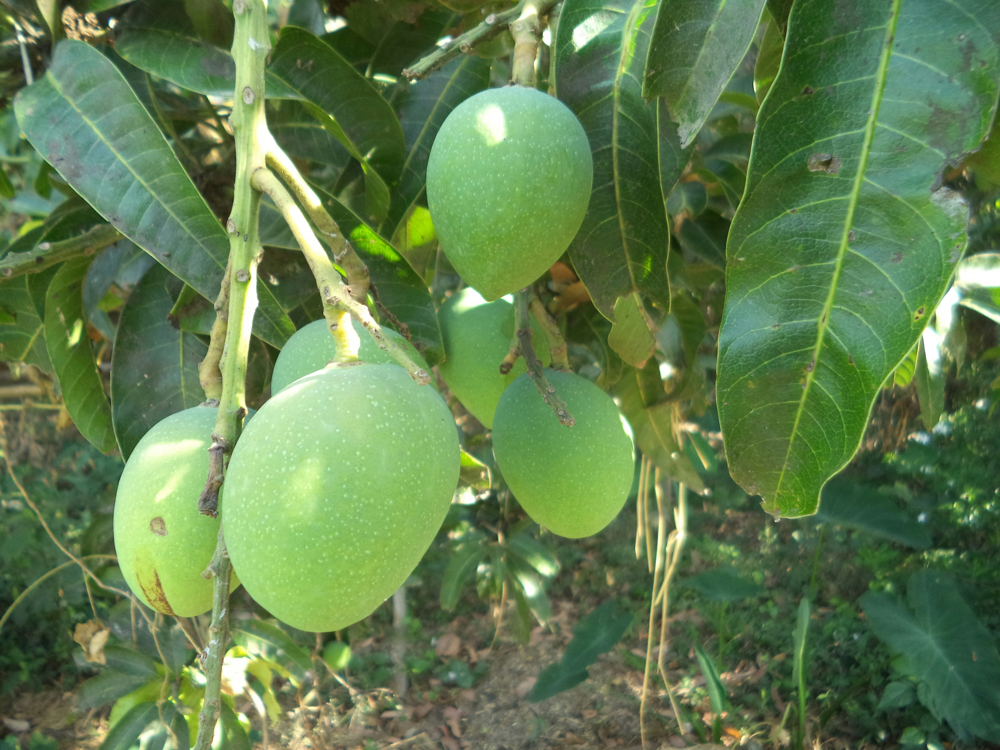
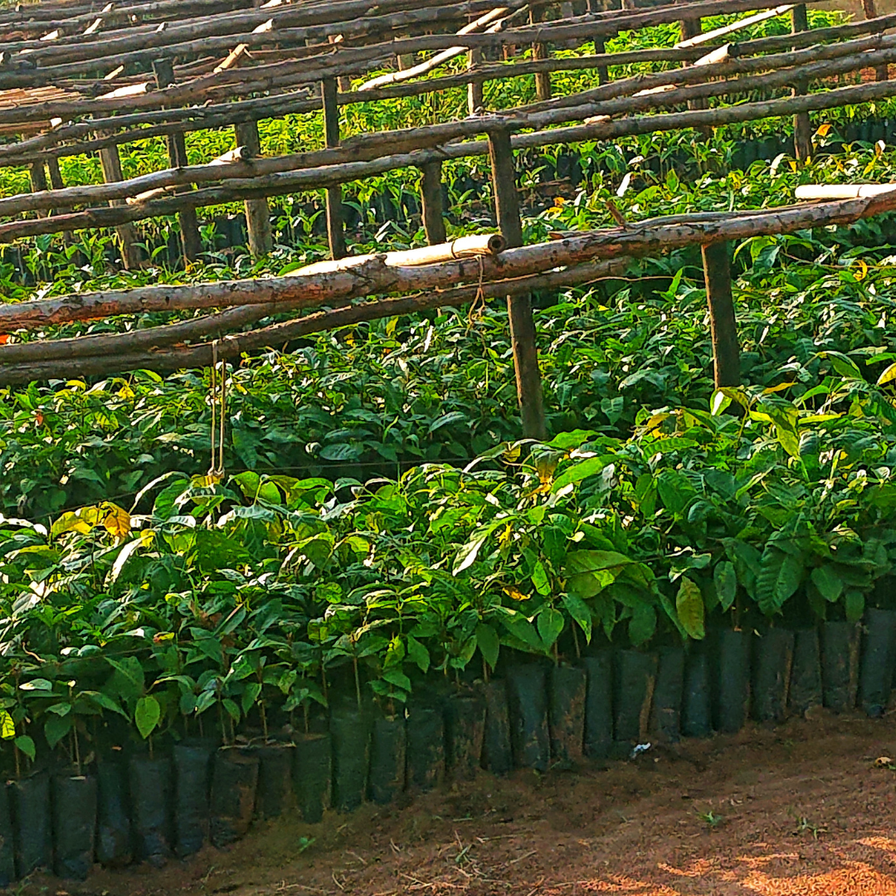
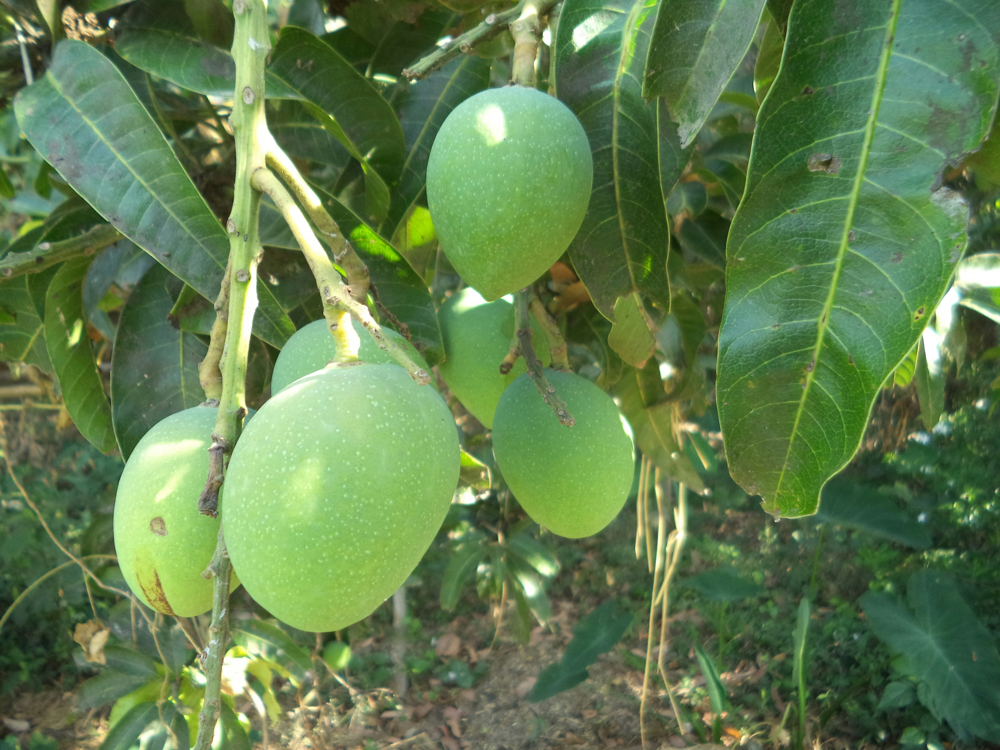

Do you know that you can benefit greatly by taking part in this jourey with us?
Do not incure loses anymore we are here to empower you in local mango farming and sustainability of your livelihood.
We give pariority to local farmers who own local mango fruit trees and have no acess to marketing.